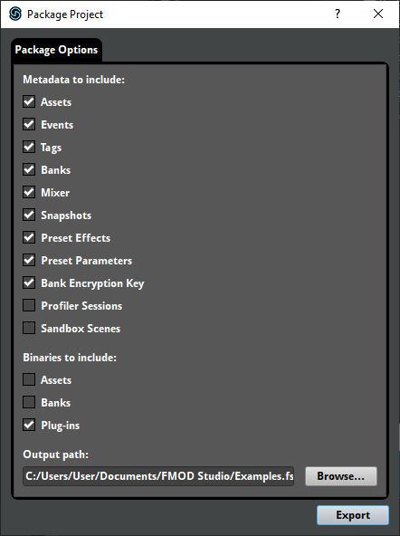

FMOD Studio User Manual 2.02
Many game projects allow players to install downloadable content (DLC) or user-generated content (UGC) after initially installing the game. Such content then appears in the game alongside the content installed with the original version of the game.
FMOD Studio supports creating new audio content for use in both DLC and UGC. It does this by allowing you (or your game's content-creating users) to make events and buses that can be built into banks and loaded alongside the other banks in your game.
Creating downloadable or user-generated content involves editing your existing FMOD Studio project. We therefore recommend creating a backup of your FMOD Studio project folder before you begin.
FMOD Studio allows you to create new bank files and new versions of your existing bank files even after you game has been released. The only thing that sets a DLC bank apart from your game's existing banks is the fact that it is not distributed as part of your existing game. DLC banks can be loaded and used alongside your game's existing banks, and can contain new events and buses, both of which can be routed into your game's existing buses.
The process of creating content for use in a DLC bank is exactly the same as the process used to create non-DLC content, and uses the same FMOD Studio project: Load your project in FMOD Studio, then begin importing assets and creating new events, banks, and buses. Events must be assigned to banks, and can be routed into new or existing group buses or the master bus. New buses can also be routed into existing group buses or the master bus.
When creating new events or editing existing events for inclusion in DLC, create or edit the events in your FMOD Studio project as usual. The new and edited events you create must all be assigned to banks.
If you want to be able to look up new events by name and path instead of by GUID in your game's code, you need to create an updated strings.bank file that contains the names and paths of the new events. This file is automatically created as part of building a master bank.
When adding new buses or editing existing buses for inclusion in DLC, you must build and distribute a new master bank or a new version of your existing master bank. This is because the master bank contains the mixer.
If you want to minimize the size of the download, you can optionally delete everything except the new buses and the group buses into which they are routed, which ensures that your master banks contain only new content. If you do this, you must create a new master bank that must be loaded alongside your game's existing master bank for the DLC to function correctly.
If you want to load multiple master banks simultaneously, each master bank must have a different GUID. A newly created master bank has a unique GUID by default, but a new version of an existing master bank does not.
Once you have created all content required for your DLC, build your FMOD Studio project. The built bank files for the modified and newly added banks can then be distributed as part of your game's DLC.
If you want your players to be able to create original audio content that can be used in your game, you can give them a copy of your FMOD Studio project with which they can make UGC.
A user with a UGC project can populate it with new content and use it to build banks compatible with your game. Like DLC banks, UGC banks can contain new events and buses, both of which can be routed into your game's existing buses.
The process of creating UGC is exactly the same as the process of creating DLC, except that the content is created by your game's players instead of by you. To create UGC compatible with your game, your players must have a copy of your game's FMOD Studio project, as well as the major version of FMOD Studio used to create that project.
If you want to limit your players' ability to edit your game's existing content, you can do so by creating a packaged copy of your project containing only the elements that you will allow players to edit. To create a packaged copy of your project, select "File > Package Project..." to open the package project dialog.

This dialog allows you to choose which components of your project are included in the package.
If you want to prevent players from using your project's existing assets, exclude your assets' metadata and binaries from the package.
If you want to prevent players from editing your existing events, exclude your events' metadata from the package. Alternatively, you could always make sure to load your version of an event first. For more information on how bank load order affects which version of an event players hear, see the Loading DLC and UGC Banks section of this chapter.
If you choose to include your events' metadata in the package, you should also include the metadata of your projects' preset parameters and preset effects, as well as the metadata and binaries of your project's assets. These components are required for your events to function correctly.
If you want to prevent players from creating new versions of your game's existing banks, exclude your banks' metadata from the package. Note that this does not exlude the metadata for your project's master bus. This is because the GUID of a UGC or DLC project's master bus must match that of the existing project's master bus, or the UGC or DLC buses will not be correctly appended to the existing buses when the project's master banks are loaded.
If you want your players to be able to create new buses or route their new events into your existing buses, you must ensure your players create and build a new master bank. This is because FMOD Studio cannot simultaneously load multiple master banks with the same GUID, but can load multiple master banks if their GUIDs differ.
Under most circumstances, DLC and UGC banks function just like other banks: They can be loaded, and then instances of the events in those banks can be played. For more information about loading banks and playing events, see the what building creates and playing events sections of the getting events into your game chapter, and the Studio API Guide chapter of the FMOD Engine User Manual.
As mentioned above, DLC and UGC master banks can contain additional mixer content. If you load one or more UGC or DLC master banks after loading the game's existing master bank, the additional buses in the DLC or UGC master banks are automatically appended to the existing routing hierarchy.
If a DLC or UGC bank contains a modified version of a bus or event found in an existing bank, your game will use the version of that bus or event that is loaded first. If you load a DLC or UGC bank first, the version from that bank is used by your game that session; whereas if you load your game's existing bank first, the version from the existing bank is used in your game that session even if a DLC bank is loaded later.